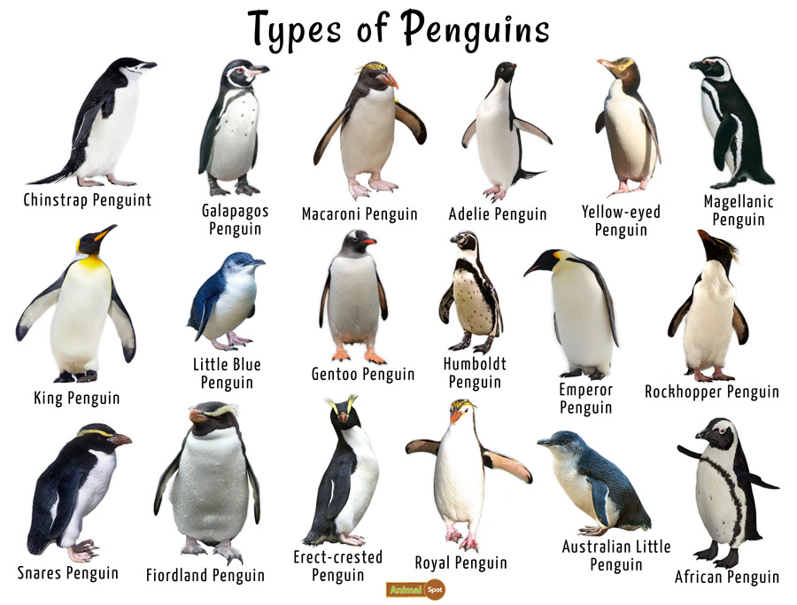

｜企鵝｜ Penguins
►企鵝的特徵◄
 企鵝屬於企鵝目（學名：Sphenisciformes）企鵝科（Spheniscidae），是一種不會飛的鳥類。
主要生活在南半球，目前已知全世界的企鵝共有19種，另有兩種已滅絕。
企鵝可說是現時最不怕冷的鳥。
牠全身羽毛密佈，皮下脂肪厚達二至三公分，這種特殊的保溫構造，使牠在冰天雪地中，仍然能夠自在生活。
企鵝身上擁有羽毛、尖而突出的堅硬鳥喙及有爪與鱗片的雙腳。
但跟其他鳥類不同，因為翅膀的演化，使牠們無法飛行，牠們也不像其他不擅於飛行的走禽，因為身體圓胖而不擅於奔跑。
但企鵝的趾間有蹼，翅膀也演化成槳狀。這樣的身體結構讓企鵝成為善泳的動物。
►企鵝的習性◄
►企鵝的影片◄
更多企鵝知識請至 »維基百科« 閱覽！